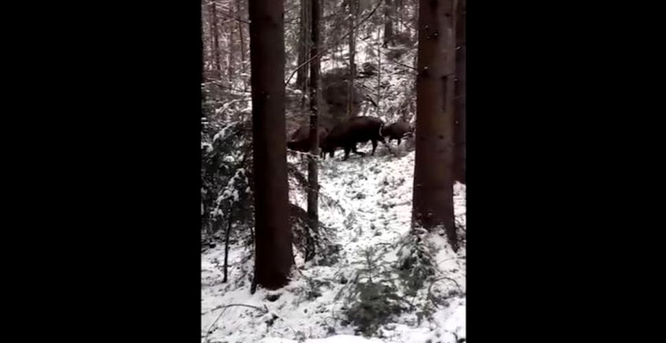
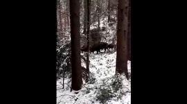
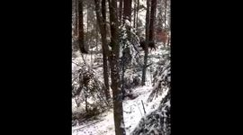
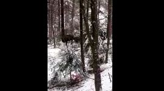

Imagini inedite cu o turmă de zimbri într-o pădure din Neamț
   Unul dintre angajații Parcului Natural Vânători Neamț s-a întâlnit cu o turmă mare de zimbri. El a filmat evenimentul și apoi imaginile au fost postate pe Facebook.
Zimbrii trăiesc în libertate în Parcul Natural Vânători Neamț. Rezervația este administrată de Romsilva, iar angajații regiei monitorizează în permanență turmele de zimbri.
Zimbrul a fost reintrodus în fauna României în 1958
„Dispărut din România timp de aproape două secole, zimbrul a fost reintrodus în fauna țării în 1958, când au fost aduse primele exemplare din Polonia. Ulterior, au fost aduse alte exemplare tot din Polonia și, treptat, au fost create mai multe nuclee de zimbri, unul din acesta fiind acum Parcul Natural Vânători Neamț. În Parcul Natural Vânători Neamț sunt în prezent, în libertate, 45 de zimbri, din care 15 s-au născut în libertate”, au explicat reprezentanții Romsilva, potrivit Mediafax.
Regia Națională a Pădurilor – Romsilva administrează trei nuclee de zimbri, la Bucșani, Hațeg și Vânători Neamț cu un efectiv total de peste o sută de exemplare.